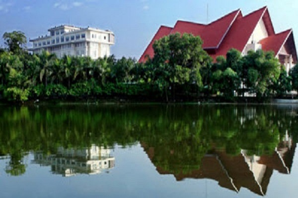
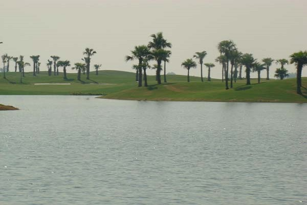
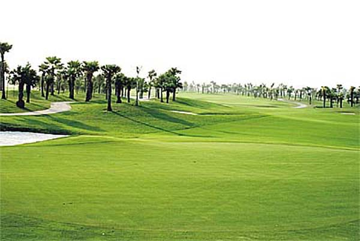

Ấn tượng khu du lịch Đầm Vạc
Khu du lịch Đầm Vạc “Lá phổi xanh” của thành phố, “Hồ Tây của Vĩnh Yên” điểm nhấn du lịch của Vĩnh Phúc.
Đầm Vạc là đầm tự nhiên có từ hàng nghìn năm nay, có 23 nhánh chính tạo ra những hồ, lạch nhỏ có chu vi 14km, chiều rộng trung bình 1km, diện tích mặt nước rộng gần 500ha, đáy sâu nhất 4,5m, trung bình 3,8m.

Điểm du lịch ở Vĩnh Phúc này xưa kia được rừng thiên nhiên bao bọc, lắm chim nhiều cá, những đàn cò, vạc, bồ nông, mòng, két, le le, cơ man nào là chim về kiếm ăn. Vì có nhiều cò vạc nên người dân gọi đây là Đầm Vạc. Tạo hóa đã ban cho Đầm Vạc nguồn nước không bao giờ cạn từ đỉnh núi Tam Đảo chảy xuống, tất cả làm cho Vĩnh Yên có mùa khí hậu ôn hòa, trong lành, thoáng mát, một cảnh quan “Sơn thủy hữu tình”.
Khu du lịch sinh thái Đầm Vạc có những dịch vụ khá tốt có thể cho bạn những phút giây nghỉ ngơi thực sự. Ở đó bạn vừa được ngắm cảnh, vừa được tham gia các hoạt động ngoài trời, đặc biệt ở đây còn có sân golf thích hợp cho
những kỳ nghỉ thư giãn cuối tuần.

Với vị trí địa lí tuyệt vời nằm gần các khu du lịch Đại Lải, Tam Đảo, Tây Thiên, lại có cảnh quan đẹp, khí hậu tốt, không khí trong lành cùng với hàng trăm cơ sở du lịch hiện đại sang trọng bao quanh, danh lam thắng cảnh ở Vĩnh Phúc này đã làm say lòng bao thế hệ du khách, hàng năm thu hút hàng nghìn lượt khách du lịch trong và ngoài nước đi du lịch Vĩnh Phúc